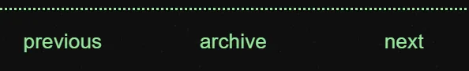

Welcome to the DeadLogs' starting tutorial! Though the files themselves are filled with comments, it still felt necessary to give at least a little outside guidance.
Let's begin
Download a theme
First things first—you need to pick a premade theme and download it. There are examples up to show you your options. You can edit the theme to your liking later.
Once you've chosen a theme, you should download it from either Itch or GitHub. After it's downloaded, you need to unzip it into an empty folder. This will be your site folder, name it however you'd like.
Configure site variables
So, now that your site is downloaded, you need to set some variables.
Open deadlogs.js in a text editor or IDE. You should be
bombarded with comments once opened. They explain some of what we're
going to go over here. We'll be going through them in sections.
First Section: About the site
let siteName = 'My Site!';
let lang = 'en'; // The language of your site. Example, en = english, fr = français (french), etc.
let siteUrl = ''; // You can just put the url of your site here, whether that be a subdomain or custom.
// Put down your name and website/social media
let author = {
name: 'Your Name',
url: ''
};I feel as if these variables are kinda self-explanatory. The name of your site, your sites url, your name, and the url to one of your socials or websites.
The variable I'd like to point out is the lang.
Whatever you define lang as gets automatically
inserted in your HTML files. It's very important for accesibility
reasons for you to put the proper tag in for the language your
site will be in. You can read more about it
here.
Second Section: Navigation
// This is where you define the pages that'll be in your navigation bar throughout the site.
let navi = [
['home','/index.html'],
['about','/about.html'],
['archive','/archive.html']
];
// The link that holds the archive list.
let middleLink = ['archive', '/archive.html'];
// Name of folder your posts are in.
let folder = 'post';
Third Section: The Footer
// This is the text that appears in the footer of your site. Feel free to customize it.
let footer = `
Owned & Written by <a href="${author.url}" target="_blank">${author.name}</a>
`;Fourth Section: The Archive
let postArchive = [
//['Title', 'Date', 'Location']
];This is where all your posts will be accounted for. We're actually going to be covering how to set this up in the next section.